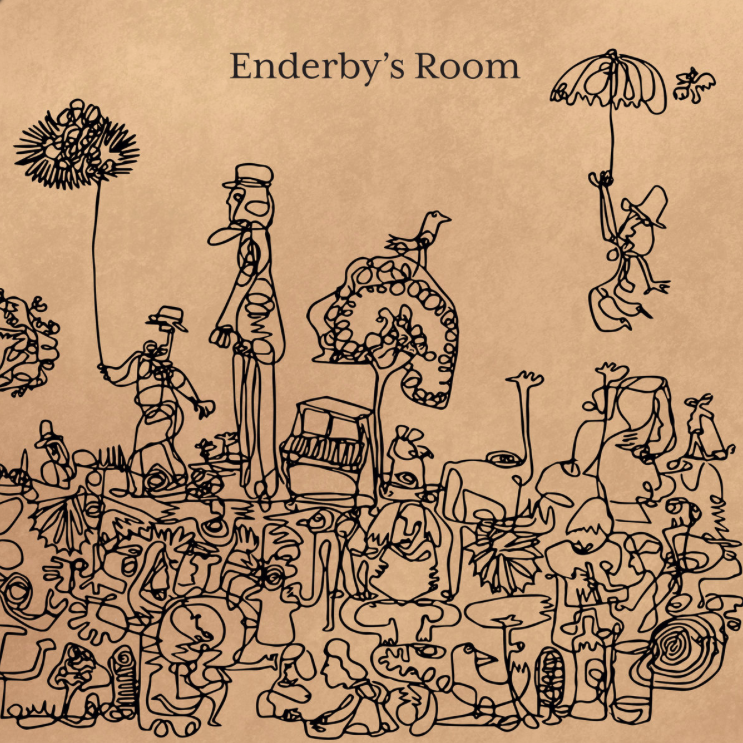

Biography
Enderby’s Room is fiddle player Dan Mayfield, once from rural Lincolnshire, but he has now found home living in London. His folk tinged songs reflect on his traditional folk upbringing. Mayfield has played violin for many artists including Daniel Johnston, Darren Hayman, The Wave Pictures, Allo Darlin’ and the Belles of London City morris dancers.
Over the past ten years he has gently built up a collection of his own songs, which he performs with his band Enderby’s Room. The name comes from an Anthony Burgess character called Mr Enderby who composed his prose inside the toilet. The band’s make up has been constantly evolving; around 30 different individuals have been a part of Enderby’s Room over the last decade, before settling on the current 5 piece lineup.
Enderby’s Room’s sound features a Victorian pedal harmonium, together with French horn, double bass, ukulele, guitar and percussion.
The artwork for the record was created by Johnny Voss whose style involves using a continuous single pen stroke to create his illustrations.
As well as Enderby’s Room, Mayfield set up School of Noise which encourages young people to be creative with sound, using unusual noise making and sound sculpting machines. This project has seen him take workshops to the Green Man and End of the Road festivals as well as the Southbank Centre, Museum of London, Great Ormond Street Hospital and primary schools around the country.

Here's a playlist of songs and artists that have inspired our music
Unfolding gently, the quiet grace of Enderby's Room seems to draw on the folk tradition while taking brave chances of its own.--Clash Music
At times they capture the sumptuous melancholia of Low; at others, they're finding new shapes for indie folk.--How Does It Feel To Be Loved